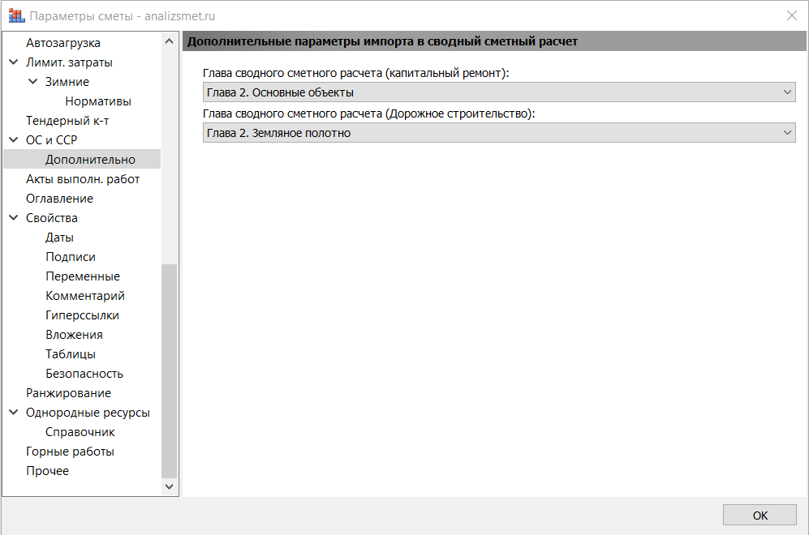

Парсер извлекает информацию из всех файлов ГРАНД-Смета вида «ЛС» и выводит данные из вкладки «Документ» → «Параметры» → «Дополнительно» (Дополнительные параметры импорта в сводный сметны расчет).

| Столбец | Описание |
|---|---|
| Описание | Описание: (Показатель единичной стоимости) |
| КолЕд | Количество единиц: |
| ЕдИзм | Единица измерения: |
| ГлОС | Глава объектной сметы: • Локальные сметы (расчеты) • Затраты на строительство титульных временных зданий и сооружений • Дополнительные затраты при производстве в зимнее время • Отдельные виды прочих затрат • Подготовка эксплуатационных кадров для строящегося объекта капитального строительства • Публичный технологический и ценовой аудит, подготовка обоснования инвестиций, осуществляемых в ин... |
| ГлССР | Глава сводного сметного расчета (стандартный расчет): • Глава 1. Подготовка территории строительства, реконструкции, капитального ремонта • Глава 2. Основные объекты строительства, реконструкции, капитального ремонта • Глава 3. Объекты подсобного и обслуживающего назначения • Глава 4. Объекты энергетического хозяйства • Глава 5. Объекты транспортного хозяйства и связи • Глава 6. Наружные сети и сооружения водоснабжения, водоотведения, теплоснабжения и газоснабжения • Глава 7. Благоустройство и озеленение территории • Глава 8. Временные здания и сооружения • Глава 9. Прочие работы и затраты • Глава 10. Содержание службы заказчика. Строительный контроль • Глава 11. Подготовка эксплуатационных кадров для строящегося объекта капитального строительства • Глава 12. Публичный технологический и ценовой аудит, подготовка обоснования инвестиций, осуществляемых в ин... • Непредвиденные затраты • Дополнительные работы и затраты |
| ГлССРк | Глава сводного сметного расчета (капитальный ремонт): • Глава 1. Подготовка площадок(территорий) капитального ремонта • Глава 2. Основные объекты • Глава 3. Объекты подсобного и обслуживающего назначения • Глава 4. Наружные сети и сооружения водоснабжения, водоотведения, теплоснабжения и газоснабжения • Глава 5. Благоустройство и озеленение территории • Глава 6. Временные здания и сооружения • Глава 7. Прочие работы и затраты • Глава 8. Технический надзор • Глава 9. Публичный технологический и ценовой аудит, подготовка обоснования инвестиций, осуществляемых в ин... • Непредвиденные затраты • Дополнительные работы и затраты |
| ГлССРд | Глава сводного сметного расчета (дорожное строительство): • Глава 1. Подготовка территории строительства • Глава 2. Земляное полотно • Глава 3. Дорожная одежда • Глава 4. Искуственные сооружения • Глава 5. Пересечения и примыкания • Глава 6. Дорожные устройства и обстановка дороги • Глава 7. Дорожная и автотранспортные служб • Глава 8. Подъезды к дороге • Глава 9. Временные здания и сооружения • Глава 10. Прочие работы и затраты • Глава 11. Содержание службы заказчика. Строительный контроль • Глава 12. Публичный технологический и ценовой аудит, подготовка обоснования инвестиций, осуществляемых в ин... • Непредвиденные затраты • Дополнительные работы и затраты |
| Назначение | Назначение объекта строительства: • Производственное • Непроизводственное |
| Импорт | Импорт пусконаладочных работ в ОС/ССР: • Все работы • Под нагрузкой - Только "Под нагрузкой" • Без нагрузки - Только "Без нагрузки" |
Всего столбцов: 9